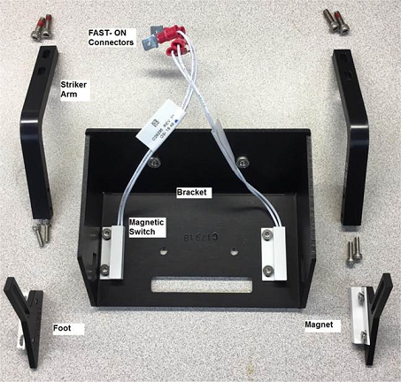
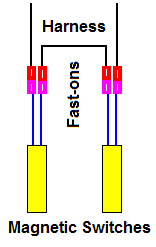

Instrument: Installing Magnetic Cover Interlock Switch Kit
This procedure describes how to install the Magnetic Cover Interlock Switch Kit.


Tools required for this procedure:
- Bypass magnets
Perform this procedure when
- the push button cover interlock switch fails.
- upgrading or replacing the old interlock switches.
- Open the upper left and upper right front covers.
- Remove the cover guide rail from over the switch bracket (4 or 6 screws).
- Disconnect the interlock harness from the existing cover switches (4 fast-on).
- Remove the existing cover switch bracket. (2 screws ).
- Remove the cover switch Striker Feet and arms from the left and right front covers ( 4 screws).
- Assemble the magnets to the new striker feet and arms (2 screws each).
- Assemble the magnetic switches to the new switch bracket (2 screws each).
- Mount the new switch bracket to the instrument (2 screws).
- Connect the magnetic switch fast-on connectors to the interlock harness.
- Mount the cover guide rail to the switch bracket (4 or 6 screws).
- Mount the new striker feet with magnet attached to the cover arms loosely.
- Close each cover and adjust the striker feet position to be lightly touching the switch bracket when the cover is closed, then open the cover and tighten the foot mounting screws.
- Confirm the MCC power goes on and off when the bypass magnets are applied and removed to the magnetic switches.
- Confirm the MCC power goes on and off when the front covers are closed and opened. The MCC power should stay on until a cover is raised to between ½" and 2".
- Close the upper left and upper right front covers.
- After all adjustments have been made and service is complete, turn off/on the Analytical Unit main power switch to reset the system.